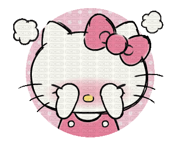
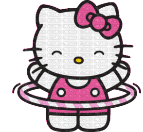

La simpática y conocida gatita Hello Kitty no necesita presentación. Es una gatita blanca, con forma antropomorfa.
No tiene boca y suele llevar coquetos adornos en su oreja izquierda.
Es un personaje ficticio creado por la diseñadora Yuko Shimizu en 1974.
Lo hizo cuando trabajaba para la compañía japonesa Sanrio.
Después de poco tiempo Hello Kitty se convirtió en el producto estrella de la marca.
Tras el primer diseño realizado por Shimizu, Yuko Yamaguchi se convirtió en la diseñadora oficial de Hello Kitty.
Con respecto al hecho de que Hello Kitty no tiene boca,
se explicaría por la bien conocida inclinación artística de los dibujantes japoneses de darle originales peculiaridades a sus creaciones.
Por ejemplo, el conocido dibujo animado Pucca no tiene nariz.
No obstante, Yamaguchi aclaró en una entrevista del 2008 por qué Hello Kitty no tiene boca.
“Es para que la gente que la mire pueda proyectar sus propios sentimientos en ella, ya que tiene una cara inexpresiva.
Kitty parece feliz cuando la gente es feliz y parece triste cuando ellos están tristes.
Por esta razón psicológica nosotros pensamos que ella no debía estar ligada a una emoción”.

Hace poco la marca japonesa Sanrio, hizo un anuncio sorprendente sobre Hello Kitty.
Todos creíamos que se trataba de una gatita.
Sin embargo Sanrio, la marca propietaria del personaje, aclaró recientemente que se trata de una niña.
Según Sanrio, Hello Kitty no es una gata sino una niña pequeña, alegre y feliz, con un corazón de oro.
Es una buena amiga.
Nunca se representa en cuatro patas. Camina y se sienta como una persona bípeda.
Sin embargo, sí tiene como mascota una gatita, ésta se llama Charmmy Kitty.
El nombre de Hello Kitty surge en respuesta a una explosión de la moda británica en Japón por aquellos años.
De hecho, en la “biografía” del personaje, se dice que nació en Londres.
La “biografía” de éste personaje, según Sanrio, sería: Kitty White, hija de George y Marie White, es gemela de Mimmy.
Nació en Londres, el 1 de noviembre de 1974. Tiene una estatura de cinco manzanas, su signo zodiacal es escorpión.
Es estudiante de tercer grado y amante de la tarta de manzanas de su mamá.
Lo que empezó como un monedero de vinilo para niñas en 1974, hoy está presente en más de 50.000 productos.
Entre ellos los más de moda, como en móviles, accesorios para coches, ropa, material escolar, portátiles, juguetes, electrodomésticos…
Ya en 1976 obtuvo derechos de autor.
Desde entonces ha sido mencionada en series tan importantes como Anatomía de Grey o Los Simpson. Incluso, en 1981 tuvo su propia película.
Además, en 2004, la delegación de la Unión Europea en Japón, la eligió para promocionar el euro; Unicef la ha nombrado su embajadora y la ha otorgado el premio Amigo Especial de los Niños;
En 2008, Japón la nombró embajadora de turismo en China y Hong Kong.
¿Cuál es la verdadera historia de Hello Kitty? ¿Es una gatita como se creía hasta hace poco o es una dulce niña a la que todos quieren? ¿No tiene boca por una moda, para proyectar los sentimientos o por un pacto con el diablo?
Nosotros os hemos dado todos los datos que hemos recopilado por la red, ahora os toca a vosotros decidir libremente.
Volver a KITTYPAGINA principal